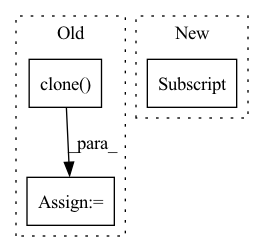

Pattern ID :1232

Before Change
if self.dynamic or self.grid[i].shape[2:4] != x[i].shape[2:4]:
self.grid[i], self.anchor_grid[i] = self._make_grid(nx, ny, i)
y = x[i].clone()
y[..., :5 + self.nc].sigmoid_()
if self.inplace:
y[..., 0:2] = (y[..., 0:2] * 2 + self.grid[i]) * self.stride[i] // xy
y[..., 2:4] = (y[..., 2:4] * 2) ** 2 * self.anchor_grid[i] // wh
After Change
wh = (wh.sigmoid() * 2) ** 2 * self.anchor_grid[i] // wh
y = torch.cat((xy, wh, conf.sigmoid(), mask), 4)
else: // Detect (boxes only)
xy, wh, conf = x[i].sigmoid().split((2, 2, self.nc + 1), 4)
xy = (xy * 2 + self.grid[i]) * self.stride[i] // xy
wh = (wh * 2) ** 2 * self.anchor_grid[i] // wh
y = torch.cat((xy, wh, conf), 4)
In pattern: SUPERPATTERN
Frequency: 3
Non-data size: 3
Instances
Fragment ID: 4389478
Project Name: ultralytics/yolov5
Commit Name: 060837406542c5c65301b8fde641f4d92a1f395e
Time: 2022-09-17
Author: glenn.jocher@ultralytics.com
File Name: models/yolo.py
M Class Name: Detect
N Class Name: Detect
M Method Name: forward(2)
N Method Name: forward(2)
M Parent Class: nn.Module
N Parent Class: nn.Module
M File Name: models/yolo.py
N File Name: models/yolo.py
M Start Line: 61
M End Line: 77
N Start Line: 58
N End Line: 77
'>
Before Change
-1, 1
) // for numerical stability
with torch.no_grad():
origin_cos = cos_theta.clone()
target_logit = cos_theta[torch.arange(0, embbedings.size(0)), label].view(-1, 1)
sin_theta = torch.sqrt(1.0 - torch.pow(target_logit, 2))
cos_theta_m = (
After Change
index.scatter_(1, label.data.view(-1, 1), 1)
index = index.byte().bool()
output = cos_theta * 1.0
output[index] = cos_theta_m[index]
output *= self.s
return output
'>
Fragment ID: 4389479
Project Name: cavalleria/cavaface
Commit Name: 98a21048f5dce435a6639a288dafc4c6be61be05
Time: 2021-08-25
Author: 605370459@qq.com
File Name: head/metrics.py
M Class Name: ArcFace
N Class Name: ArcFace
M Method Name: forward(3)
N Method Name: forward(3)
M Parent Class: nn.Module
N Parent Class: nn.Module
M File Name: head/metrics.py
N File Name: head/metrics.py
M Start Line: 81
M End Line: 103
N Start Line: 67
N End Line: 86
'>
Before Change
def forward(self, prediction, target, printable=False):
//preprocessing
prediction = prediction.clone()
target = target.clone()
mask = target > 0
target[mask] = (target[mask] - target[mask].min()) / (target[mask].max() - target[mask].min()) * 9 + 1
target[mask] = 10. / target[mask]
After Change
// print(mask2.type(torch.float32).mean())
//prediction[mask2] = (prediction[mask2] - prediction[mask2].min()) / (prediction[mask2].max() - prediction[mask2].min()) * 9 + 1
//prediction[mask2] = 10. / prediction[mask2]
prediction[~mask2] = 0.
if printable:
print("******************************************************")
'>
Fragment ID: 4389470
Project Name: antocad/focusondepth
Commit Name: 2ec64cb2e594f726f9cbddf07ff72d3be1a47fdc
Time: 2021-12-30
Author: antoine.cadiou@icloud.com
File Name: FOD/Loss.py
M Class Name: ScaleAndShiftInvariantLoss
N Class Name: ScaleAndShiftInvariantLoss
M Method Name: forward(4)
N Method Name: forward(4)
M Parent Class: nn.Module
N Parent Class: nn.Module
M File Name: FOD/Loss.py
N File Name: FOD/Loss.py
M Start Line: 128
M End Line: 143
N Start Line: 127
N End Line: 144